Please open the demo webpage in Chrome for an enhanced experience. Headphones are recommended for better audio quality.
Discourse-level Speech Style Control
Case Study
In this section we provide samples of intricated modeling of vision-refined speech style control. First we present the model’s capabilities of utilizing out-of-domain photos and emojis to refine the style of speech. Then we demonstrate the model from various aspects such as gender, age, hues, and emotion. Finally, we present the results of comparative experiments and ablation study.
Out-of-Domain
In this section, we present the model’s capabilities of synthesizing speech refined by out-of-domain images.
| id | Conditional Image A | Conditional Image B |
|---|---|---|
| 1 |  |
 |
| I just got a call from the hospital about the test results | I just got a call from the hospital about the test results | |
| 2 |  |
 |
| Listen, I never expected it to turn out this way. | Listen, I never expected it to turn out this way. | |
| 3 |  |
 |
| No matter the obstacles, we will always find a way to overcome them and reach our goals. | No matter the obstacles, we will always find a way to overcome them and reach our goals. | |
| 4 |  |
 |
| This is exactly what I was talking about | This is exactly what I was talking about | |
| 5 |  |
 |
| This is just the beginning of something great | This is just the beginning of something great | |
| 6 | 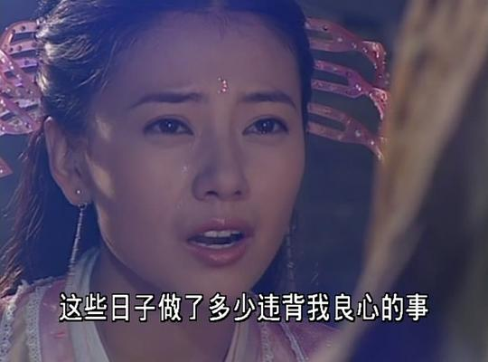 |
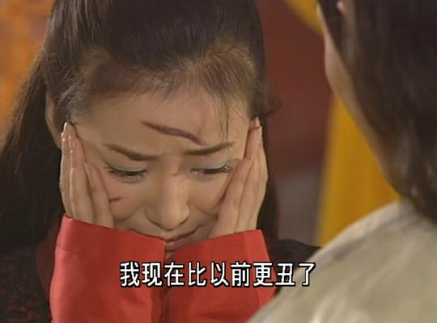 |
| 这些日子做了多少违背我良心的事(trans: These days, I’ve done so many things that go against my conscience.) | 这些日子做了多少违背我良心的事(trans: These days, I’ve done so many things that go against my conscience.) | |
| image | transcript | speech |
|---|---|---|
 |
各位观众，晚上好，今天是2021年1月13日，农历腊月初一(trans: Good evening, everyone. Today is January 13, 2021, the first day of the twelfth lunar month.) | |
 |
哎哟，怎么会这样嘛(trans: Oh no, how could this happen?) | |
 |
我们今天的中国，就是要与时俱进！(trans: Today’s China must keep pace with the times!) |
Emoji-Refined
| emoji | transcript | speech |
|---|---|---|
| Hi, I am your personal assistant, what can i do for you? | ||
| 天呐,我的钱包落在大巴上了!!(trans:For god sake!! I forget my wallet on the bus!) | ||
| Have a great night, my dear. | ||
| 那是我的妹妹！(trans: That’s my sister!) | ||
| It is too bad, brother. | ||
| In this situation, I want you to focus on the circle. | ||
| Look at me, do I look like a baby? | ||
| 哈哈你太好笑啦！(trans:You are so funny!) | ||
| 好，请看下课本的第五章节，标题说的是什么(trans: Okay, please take a look at Chapter 5 of the textbook. What does the title say) | ||
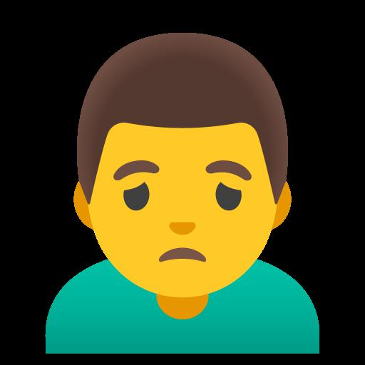 |
Listen to me, I am an idiot. | |
| And you think they will let you go? | ||
| That is the funniest thing I have heard this year. | ||
| That, my friend, is the strangest thing I have heard this year. |
Gender
| id | Conditional Image A | Conditional Image B |
|---|---|---|
| 1 | 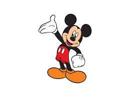 |
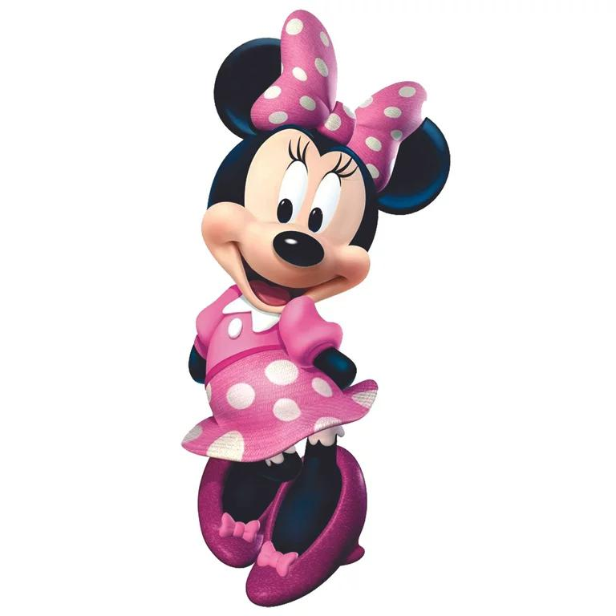 |
| Hello, welcome to Mickey Mouse Clubhouse, this is super cool! | Hello, welcome to Mickey Mouse Clubhouse, this is super cool! | |
| 2 | ||
| 新思想引领新征程,我国综合立体交通网加速形成(trans: New ideas lead a new journey, and my country’s comprehensive three-dimensional transportation network accelerates the formation of) | 新思想引领新征程,我国综合立体交通网加速形成(trans: New ideas lead a new journey, and my country’s comprehensive three-dimensional transportation network accelerates the formation of) | |
| 3 | ||
| 所以你看，张三构不构成犯罪，是由什么决定的(trans: So you see, what determines that Zhang Sangou does not constitute a crime?) | 所以你看，张三构不构成犯罪，是由什么决定的(trans: So you see, what determines that Zhang Sangou does not constitute a crime?) | |
| 4 | ||
| Hahahaha, are you kidding me? | Hahahaha, are you kidding me? | |
Age
| id | Conditional Image A | Conditional Image B | Conditional Image C |
|---|---|---|---|
| 1 |  |
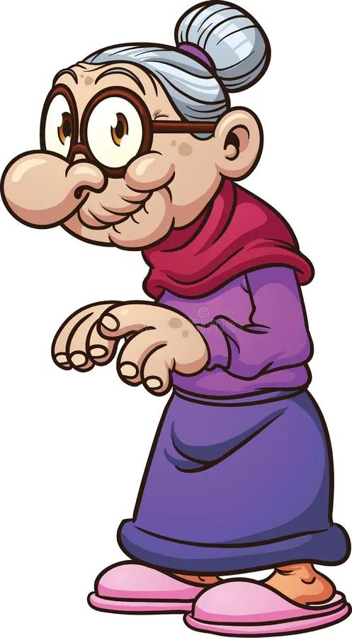 |
|
| 我想吃很多很多很多很多的蛋糕。Well then, thank you for your corporation.(trans: I want to eat lots and lots of cake. Well then, thank you for your corporation) | 我想吃很多很多很多很多的蛋糕。Well then, thank you for your corporation.(trans: I want to eat lots and lots of cake. Well then, thank you for your corporation) | 我想吃很多很多很多很多的蛋糕。Well then, thank you for your corporation.(trans: I want to eat lots and lots of cake. Well then, thank you for your corporation) | |
| 2 | |||
| 你好，你是猴子搬来的救兵吗(trans: Hello, are you the rescuer brought in by the monkeys?) | 你好，你是猴子搬来的救兵吗(trans: Hello, are you the rescuer brought in by the monkeys?) | 你好，你是猴子搬来的救兵吗(trans: Hello, are you the rescuer brought in by the monkeys?) | |
Hues
| id | Conditional Image A | Conditional Image B |
|---|---|---|
| 1 | ||
| I would like to say, that your journey has come to an end. | I would like to say, that your journey has come to an end. | |
| 2 | ||
| 你可真是个小坏蛋(trans: You are such a little rascal) | 你可真是个小坏蛋(trans: You are such a little rascal) | |
Emotion
| id | Conditional Image A | Conditional Image B | Conditional Image C |
|---|---|---|---|
| 1 | 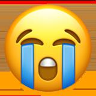 |
||
| 你太让我失望了(trans: You have let me down too much) | 你太让我失望了(trans: You have let me down too much) | 你太让我失望了(trans: You have let me down too much) | |
| 2 | 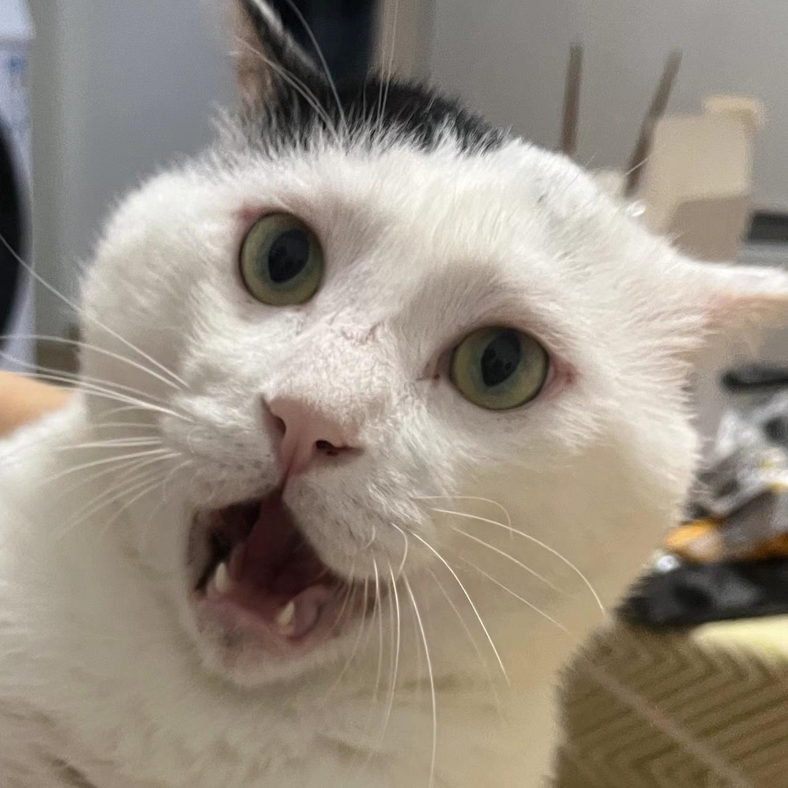 |
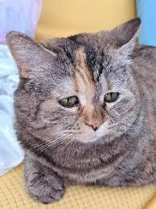 |
|
| 我的天哪你别靠近我(trans: Oh my god, don’t come near me.) | 我的天哪你别靠近我(trans: Oh my god, don’t come near me.) | 我的天哪你别靠近我(trans: Oh my god, don’t come near me.) | |
| id | Conditional Image A | Conditional Image B |
|---|---|---|
| 3 | ||
| 他们还厚颜无耻的说出这样的话，恶心(trans: They have the audacity to say such things, it’s disgusting.) | 他们还厚颜无耻的说出这样的话，恶心(trans: They have the audacity to say such things, it’s disgusting.) | |
| 4 | ||
| We were going to take the shortcut onto brightside and as we were turning | We were going to take the shortcut onto brightside and as we were turning | |
| 5 | 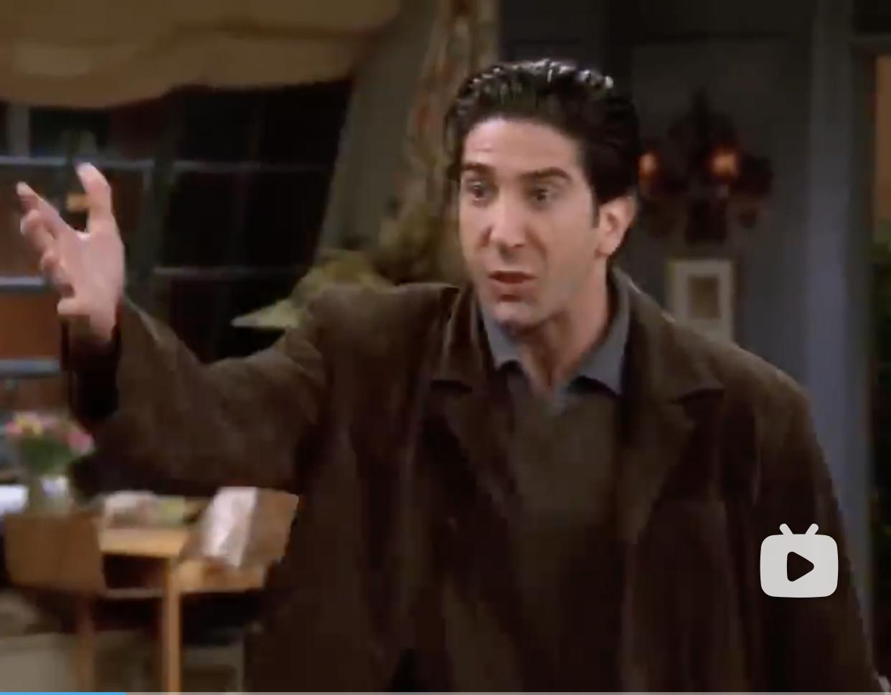 |
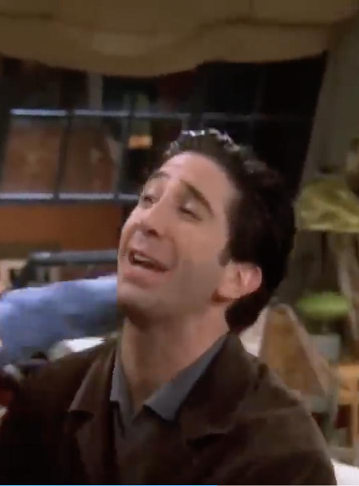 |
| My best friend and my sister! I can not believe that! | My best friend and my sister! I can not believe that! | |
| 6 | ||
| What are you talking about? | What are you talking about? | |
Comparative Experiments
To verify the effectiveness of non-facial regions, we conduct comparative experiments on different regions of the image: face-only, non-face, original. All three of them are set without loss weight annealing.
| id | face-only | non-face | Original |
|---|---|---|---|
| 1 | |||
| The cubs go sixty and thirty four from that point forward , | The cubs go sixty and thirty four from that point forward , | The cubs go sixty and thirty four from that point forward , | |
| 2 | |||
| I mean you cannot , in the same moment of thought , | I mean you cannot , in the same moment of thought , | I mean you cannot , in the same moment of thought , | |
| 3 | |||
| 二奶奶在哭泪珠打她眼角里簌簌往下落(trans: The second lady was crying, and tears fell from the corners of her eyes.) | 二奶奶在哭泪珠打她眼角里簌簌往下落(trans: The second lady was crying, and tears fell from the corners of her eyes.) | 二奶奶在哭泪珠打她眼角里簌簌往下落(trans: The second lady was crying, and tears fell from the corners of her eyes.) | |
| 4 | |||
| Amazing , amazing poems . | Amazing , amazing poems . | Amazing , amazing poems . | |
Ablation Study
To verify the effectiveness of multi-modal contrastive learning, we conduct ablation experiments. We present partial synthesized audios as follows.
| id | proposed | proposed w/o text | Baseline |
|---|---|---|---|
| 1 | 你这个问题问的的确好笑 | 你这个问题问的的确好笑 | 你这个问题问的的确好笑 |
| 2 | 弄的我名声不佳我简直要气死了呀(trans: It’s given me a bad reputation, and I’m really pissed off) | 弄的我名声不佳我简直要气死了呀(trans: It’s given me a bad reputation, and I’m really pissed off) | 弄的我名声不佳我简直要气死了呀(trans: It’s given me a bad reputation, and I’m really pissed off) |
| 3 | 有的,最后一朵花的幽灵依然存在着!(trans: Yes, the ghost of the last flower still exists!) | 有的,最后一朵花的幽灵依然存在着!(trans: Yes, the ghost of the last flower still exists!) | 有的,最后一朵花的幽灵依然存在着!(trans: Yes, the ghost of the last flower still exists!) |
| 4 | A man stood behind blaine , | A man stood behind blaine , | A man stood behind blaine , |
| 5 | From what you understand , | From what you understand , | From what you understand , |